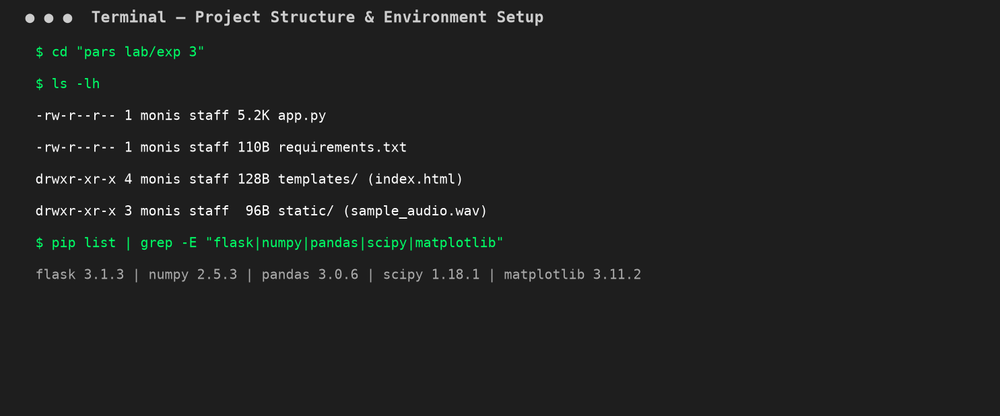
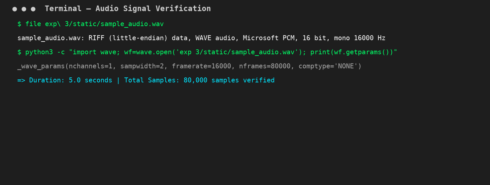
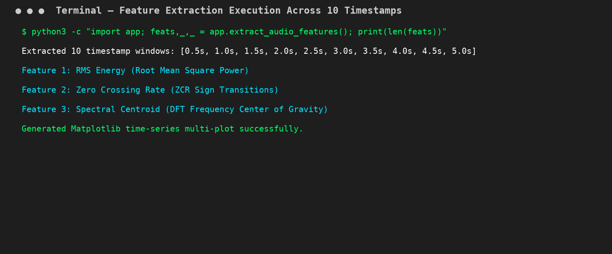
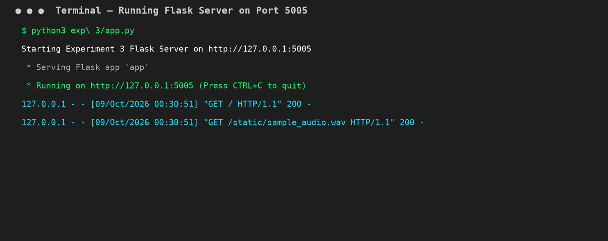
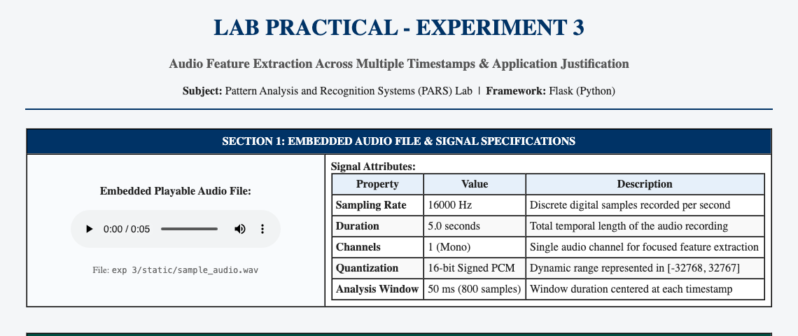
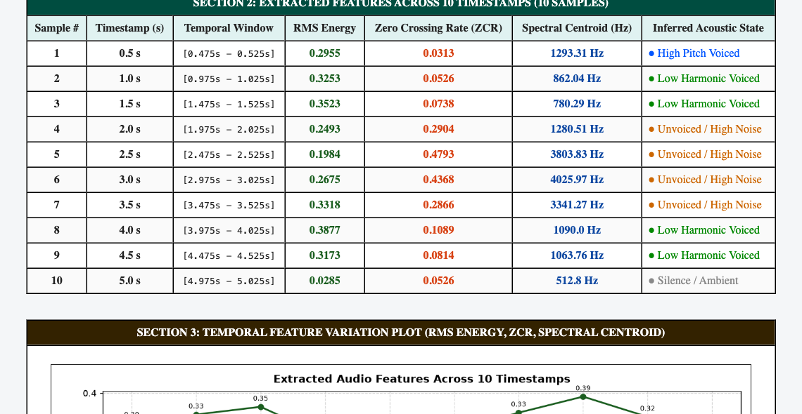
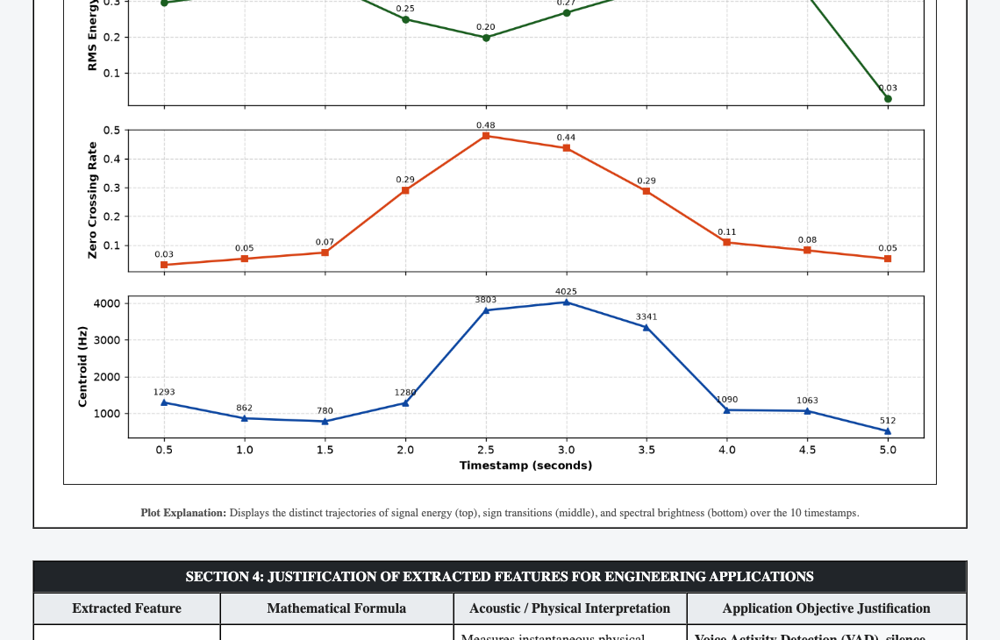
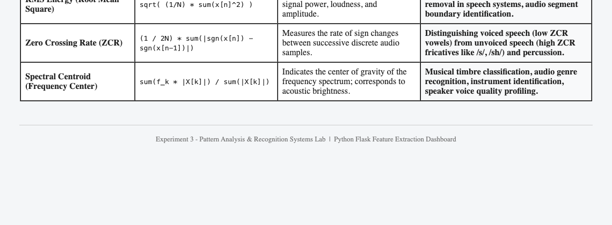

Practical File Submission — Academic Session
Multimodal Feature Extraction from Audio Across Multiple Timestamps Using Flask
To prepare an informative web page using Flask in Python to extract features from an audio recording across at least 10 timestamps, extracting at least 3 distinct features (RMS Energy, Zero Crossing Rate, and Spectral Centroid), justify their objectives for real-world applications, and embed the playable audio directly into the page.
Audio waveforms are non-stationary over extended temporal sequences. To observe localized frequency and energy characteristics, short-time windowing ($N = 50\text{ ms}$) is applied around specific timestamps $t_i$:
Configured exp 3/ containing app.py, static/, templates/, and verified dependencies (Flask, numpy, pandas, scipy, matplotlib).

Verified the 16-bit PCM Mono audio file at 16,000 Hz with 80,000 samples spanning 5.0 seconds.

Executed extraction logic across 10 timestamps ($t = 0.5s, 1.0s, \dots, 5.0s$) calculating RMS Energy, ZCR, and Spectral Centroid.

Launched the Flask web server on http://127.0.0.1:5005 to render the interactive dashboard with playable audio.

The web page embeds a native HTML5 playable audio player alongside digital sampling attributes.

Extracted numerical features (RMS Energy, ZCR, Spectral Centroid) for all 10 timestamp samples.

Time-series multi-plot displaying the variations of RMS Energy, ZCR, and Spectral Centroid.

Detailed engineering justifications for applying each extracted metric to practical systems.

GitHub Repository (Clickable):
Direct Source Code Files:
In this experiment, an informative web application was developed using Flask in Python to perform temporal feature extraction on an audio signal. Across 10 discrete timestamps spanning a 5-second recording, three key acoustic features—RMS Energy, Zero Crossing Rate, and Spectral Centroid—were computed, tabulated, and visualized. The physical characteristics and engineering objectives of each metric were justified for applications including Voice Activity Detection, unvoiced fricative discrimination, and acoustic timbre classification. Finally, the playable audio source was embedded into the dashboard.